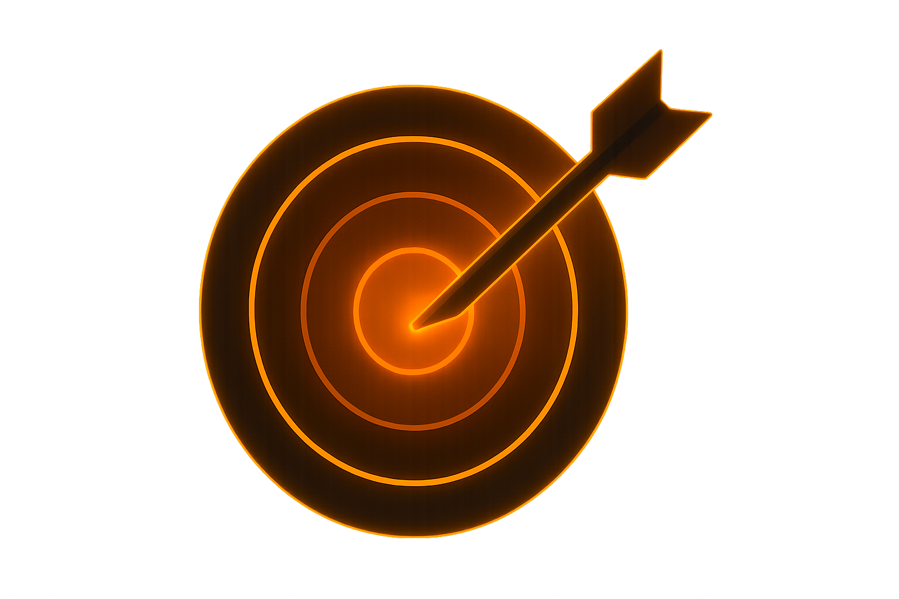

Hranice chlapaProč jsou nutné a jak je nastavit
Hranice nejsou zeď. Jsou to brány, které otevíráš vědomě. Nauč se je nastavit – doma, ve vztahu, v práci i sám sobě – bez keců a pocitu viny.
Chlap bez hranic se rozpustí v požadavcích všech ostatních. Partnerka chce tohle, šéf chce víc, kámoši tě tahají ven, rodina čeká, že vždycky přijedeš. A ty? Zůstaneš bez energie, bez respektu, bez směru.
Stanovit si hranice není sobectví.
Jsou to mantinely, díky kterým můžeš být užitečný tam, kde to dává smysl – a nezblázníš se.„Co nepustíš přes bránu, to ti nezboří hrad.“
Proč jsou hranice nutné
- Sebeúcta. Když si sám sebe vážíš, nenecháš druhé, aby s tebou točili. Hranice jsou praktická forma respektu k sobě.
- Energie a soustředění. Každé „ANO“ něčemu je „NE“ něčemu jinému. Hranice chrání tvůj čas a hlavu pro to, co je fakt důležité.
- Čitelnost pro okolí. Jasné hranice dávají ostatním jistotu. Ví, co od tebe čekat – a co už ne.
Signály slabých hranic:
- Říkáš „ano“, i když chceš říct „ne“.
- Naštvání se hromadí – bouchnou ti saze kvůli blbosti.
- Ty plánuješ podle druhých, oni podle sebe.
- Vymlouváš se sám sobě: „jen teď, příště to nedovolím“ – a nikdy to nepřijde.
Jak hranice nastavit – prakticky
Rychlý audit života
- • Kde nejčastěji překračuju vlastní limity? (práce, vztah, rodina, digitál)
- • Co mě po tom spolehlivě sere? (pocit zneužití, únava, chaos)
- • Jak vypadá moje „OK“ a moje „UŽ NE“ v té dané oblasti?
Nesmlouvej sám se sebou
Dej si nepřekročitelné mantinely, které platí vždy. Pár příkladů:
- • Spánek: po 18:00 neřeším maily ani zprávy a chodím spát každý den ve stejnou hodinu.
- • Práce: o víkendu neberu ad-hoc - „udělej to pro mě - mimo plán“.
- • Vztah: žádné výčitky a pasivní agrese – mluvíme napřímo.
- • Digitál: sociální sítě max. 20 min/den a to jen pracovně.
Řekni to nahlas, jasně a krátce
Hranice nefungují, když jsou jen v hlavě. Komunikuj je jednoduše, bez omluv.
Věty, které můžeš rovnou použít:
„Tohle teď nemohu udělat. Musím udělat A a B. Můžu se k tomu vrátit zítra ve 14:00, nebo to předáme (doplň si sám).“
„O tomhle budeme mluvit, až budeme oba v klidu. Teď potřebuju půl hodiny ticha. Pak si sedneme a vyřešíme to.“
„Dneska ne. Mám trénink a spánek je priorita. Příště se přidám.“
Důsledky – bez nich je to jen přání
Hranice = pravidlo + důsledek. Když se jedno z toho překročí, následuje akce.
Ne výbuch, ale pevný krok.
- Práce: neplánované úkoly mimo domluvu → přesun do dalšího termínu.
- Vztah: křik/urážky → končím rozhovor, vrátíme se k tomu zítra.
- Rodina/kámoši: neohlášené návštěvy → neotvírám, domlouváme se předem.
Trénuj „NE“ v malých dávkách
Začni v bezpečných situacích: reklamní telefonát, prodejce na ulici, zbytečná schůzka.
Každé „NE“ ti zvedá sílu říct další.
Hranice podle oblastí
V PRÁCI
- Timebox: bloky soustředění bez notifikací (např. 2×90 min/den).
- Kanály: vše k úkolům jen v jednom nástroji (ne ve 4 chatovacích aplikacích).
- Realita kapacity: jeden člověk = jeden úkol. Další věc počká.
VE VZTAHU
- Respekt: bez nadávek a shazování. Pokud se k něčemu takovému schyluje, okamžitě přerušuji pozornost.
- Čas pro sebe: týdně máš svůj večer – sport, ticho, cokoliv.
- Očekávání: dáváme si je dopředu, ne zpětně vyčítáme.
S RODINOU A PŘÁTELI
- Domluva: návštěvy jen domluvené – „Zítra v 17:00 je OK“.
- Půjčky času/peněz: pravidla předem, ne po průšvihu.
- Drama: když se spustí kolotoč, nevysvětluješ donekonečna – odcházíš.
DIGITÁLNÍ HRANICE
- Notifikace: vypnout vše kromě kalendáře a hovorů.
- Telefon mimo ložnici, režim „Nerušit“ po 22:00.
- Žádné „scroll před spaním“. Tupé procházení Instagramu s kočičkami a Tik Toku vyměň za knihu.
Časté chyby
- Přílišné vysvětlování. Hranice je krátká a jasná. Neomlouvej se za ni.
- Nepřiměřené tresty. Nejsi bachař. Stačí konzistentní menší důsledky.
- Nejednotnost. Jednou povolíš, podruhé vybuchneš – okolí je zmatené. Buď čitelný.
Mini-plán na 7 dní
Den 1: Napiš si 3 oblasti, kde nejvíc přepaluješ (práce/vztah/digitál).
Den 2: Pro každou oblast urči 1 nepřekročitelnou hranici.
Den 3: Připrav si 1 větu – slušné ale jasné odmítnutí pro každou oblast.
Den 4: Řekni jedno vědomé „NE“ v malé situaci.
Den 5: Sdílej hranici s jedním člověkem (partner, kolega).
Den 6: Zaveď důsledek u jednoho překročení hranice – klidně malý.
Den 7: Zhodnoť. Co fungovalo? Co upravíš? Ulož si to jako své nové standardy.
„Hranice nejsou zeď. Jsou to brány, které otevíráš vědomě.“
Chceš na to navázat? Mrkni i na Red Pill – Otevři oči a Pravda bolí, ale lež zabíjí.
Drž se svých mantinelů. Tvoje energie, tvoje zodpovědnost.
